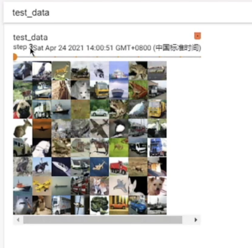
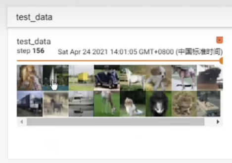

介绍DataLoader类的使用，并用代码演示。
理论基础
在pytorch中，神经网络在训练前需要先构建Dataset和DataLoader。在4.1中，已经介绍了Dataset类的构建，这节来介绍DataLoader类的构建。
Dataset和DataLoader类的区别在于，Dataset只是标记了数据的位置，而DataLoader则决定神经网络如何抽取数据，比如一次抽取多少数据、是否随机抽取等。
代码实现
1
2
3
4
5
6
7
8
9
10
11
12
13
14
15
16
17
18
| import torchvision
from torch.utils.data import DataLoader
from torch.utils.tensorboard import SummaryWriter
test_data = torchvision.datasets.CIFAR10("./dataset", train=False, transform=torchvision.transforms.ToTensor())
test_loader = DataLoader(dataset=test_data, batch_size=64, shuffle=True, numworkers=0, drop_last=False)
writer = SummaryWriter("dataloader")
step = 0
for data in test_loader:
imgs, targets = data
writer.add_images("test_data", imgs, steps)
step += 1
writer.close()
|
在tensorboard中，每个batch的结果如图，即每组有64张图片。

由于数据集数量未必能被64整除，所以最后一个batch不足64张图片。如果设置drop_last为True，则会丢弃最后一个batch。
